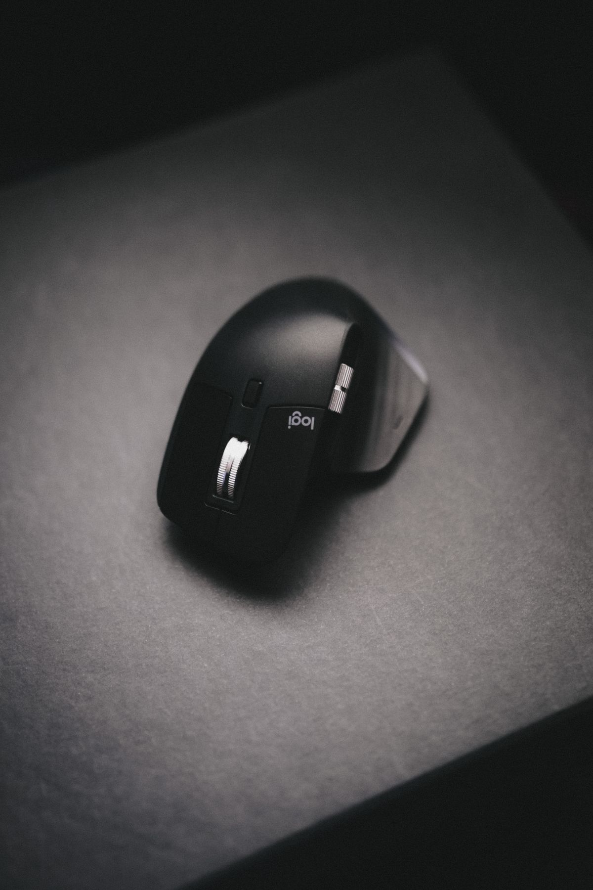
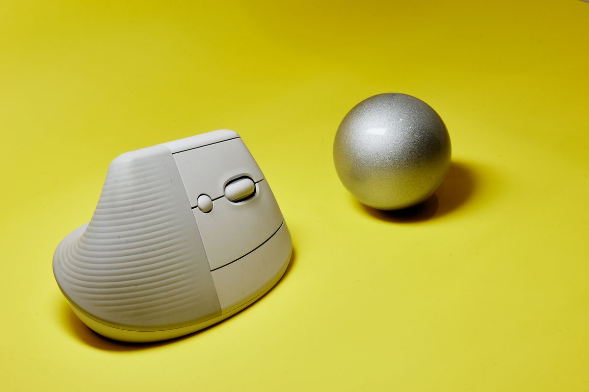
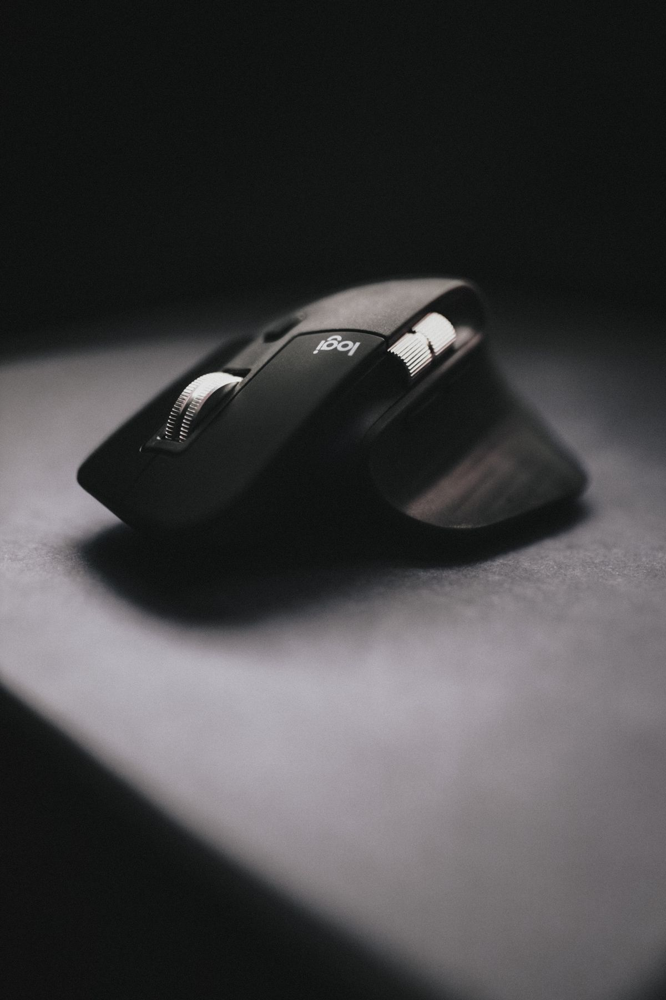
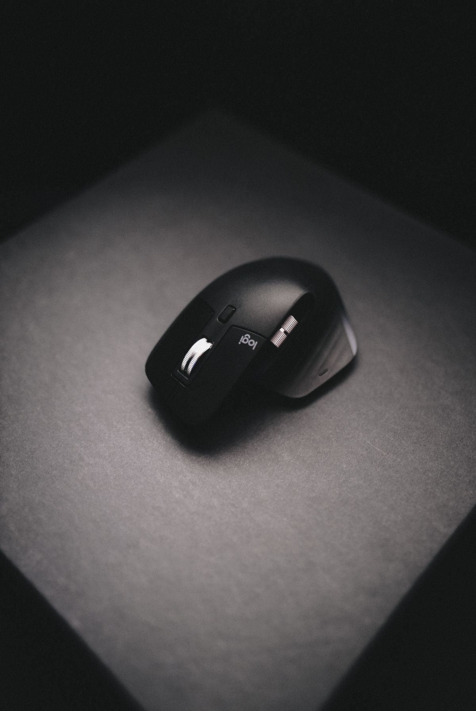

เมาส์ Ergonomic รุ่นไหนดี 2026 รวม 5 อันดับน่าใช้ ลดปวดข้อมือสำหรับมือ WFH
รวม 5 อันดับเมาส์ Ergonomic น่าใช้ปี 2026 ทั้งแบบแนวตั้งและทรงโค้งรับอุ้งมือ ช่วยลดอาการปวดข้อมือจากการทำงานหน้าจอ พร้อมเกณฑ์การเลือกซื้อ ซื้อผ่าน Shopee
อัปเดต กรกฎาคม 2026
ใครที่นั่งจับเมาส์ทำงานหน้าจอวันละหลายชั่วโมง คงเคยรู้สึกปวดเมื่อยบริเวณข้อมือ ฝ่ามือ หรือแขนท่อนล่างสะสมมาเรื่อย ๆ อาการเหล่านี้ไม่ใช่เรื่องเล็ก เพราะการใช้เมาส์ทรงมาตรฐานที่บังคับให้ข้อมือคว่ำลงและบิดเป็นเวลานาน คือหนึ่งในสาเหตุหลักของกลุ่มอาการ RSI (Repetitive Strain Injury) และพังผืดกดทับเส้นประสาทข้อมือ (Carpal Tunnel Syndrome) เมาส์ Ergonomic จึงถูกออกแบบมาเพื่อแก้ปัญหานี้โดยเฉพาะ บทความนี้จะพาไปดูว่าเมาส์เพื่อสุขภาพมีกี่แบบ เลือกอย่างไร พร้อมจัดอันดับ 5 รุ่นที่น่าใช้ที่สุดในปี 2026
เมาส์ Ergonomic คืออะไร ทำไมถึงช่วยลดอาการปวดได้
เมาส์ Ergonomic คือเมาส์ที่ออกแบบรูปทรงให้สอดคล้องกับสรีระธรรมชาติของมือและข้อมือ แทนที่จะให้ฝ่ามือคว่ำราบขนานกับโต๊ะแบบเมาส์ทั่วไป เมาส์กลุ่มนี้มักเอียงองศาให้มืออยู่ในท่า "จับมือทักทาย" (handshake position) ซึ่งเป็นท่าที่กล้ามเนื้อแขนและข้อมือผ่อนคลายที่สุด ช่วยลดการบิดของกระดูกแขนท่อนล่างสองชิ้น (pronation) ที่เป็นต้นเหตุของอาการล้าสะสม
นอกจากองศาการวางมือแล้ว เมาส์ Ergonomic ที่ดีมักมีขนาดพอดีอุ้งมือเพื่อลดการเกร็งนิ้ว มีปุ่มที่กดได้โดยไม่ต้องออกแรงมาก และรองรับการวางแขนให้เคลื่อนไหวจากหัวไหล่แทนการสะบัดข้อมือ ผลลัพธ์คือทำงานได้นานขึ้นโดยที่มือไม่ล้าเร็วเหมือนเดิม
ประเภทของเมาส์ Ergonomic ที่ควรรู้ก่อนเลือกซื้อ
เมาส์แนวตั้ง (Vertical Mouse) เอียงองศาสูง 50–60 องศา ให้มืออยู่ในท่าตั้งเกือบตรง เหมาะกับคนที่มีอาการปวดข้อมือชัดเจนอยู่แล้ว หรืออยากป้องกันแบบจริงจัง แต่ต้องใช้เวลาปรับตัวช่วงแรก
เมาส์ทรงโค้งรับอุ้งมือ (Contoured/Sculpted) เอียงองศาไม่มากเท่าแนวตั้ง (ราว 20–30 องศา) รูปทรงยังคล้ายเมาส์ปกติแต่โค้งรับฝ่ามือ ปรับตัวง่ายกว่า เหมาะกับคนที่เพิ่งเริ่มเปลี่ยนมาใช้เมาส์เพื่อสุขภาพ
เทรกบอล (Trackball) ใช้นิ้วหมุนลูกบอลแทนการขยับทั้งแขน เหมาะกับคนที่มีพื้นที่โต๊ะจำกัดหรือปวดบริเวณหัวไหล่ แต่ต้องปรับความเคยชินพอสมควร
5 อันดับเมาส์ Ergonomic น่าใช้ ปี 2026

อันดับ 1 — Logitech MX Master 3S (ตัวท็อปสายทำงาน)
รุ่นเรือธงที่ครองใจสาย Productivity มาต่อเนื่อง ทรงโค้งรับอุ้งมือขนาดใหญ่รองรับฝ่ามือได้เต็ม ๆ จุดเด่นปี 2026 คือปุ่มคลิกเงียบ (Quiet Click) ที่เบาเสียงลงกว่ารุ่นเดิมมาก เหมาะกับการประชุมออนไลน์ พร้อมเซนเซอร์ความละเอียด 8,000 DPI ใช้ได้แม้บนพื้นผิวกระจก ลูกล้อ MagSpeed เลื่อนเอกสารยาว ๆ ได้ลื่นไหล เชื่อมต่อได้ 3 อุปกรณ์พร้อมกันและสลับได้ในปุ่มเดียว แบตเตอรี่ชาร์จ USB-C ใช้ได้นานหลายสัปดาห์ต่อการชาร์จหนึ่งครั้ง เหมาะกับคนที่ต้องการเมาส์ทำงานครบเครื่องที่สุดและงบไม่จำกัด ดูราคา Logitech MX Master 3S บน Shopee

อันดับ 2 — Logitech Lift Vertical (เมาส์แนวตั้งที่เหมาะกับคนส่วนใหญ่)
เมาส์แนวตั้งที่เอียง 57 องศา แต่ออกแบบให้ตัวเล็กกะทัดรัด เหมาะกับมือขนาดเล็กถึงกลาง จึงเป็นเมาส์แนวตั้งที่คนส่วนใหญ่ปรับตัวได้ง่ายที่สุด ปุ่มคลิกเงียบ ผิวสัมผัสยางนุ่มกันลื่น เชื่อมต่อ Bluetooth หรือ USB Receiver ได้ ใช้ถ่าน AA ก้อนเดียวได้นานถึงราว 2 ปี มีทั้งรุ่นสำหรับมือขวาและมือซ้ายให้เลือก เหมาะกับคนที่เริ่มมีอาการปวดข้อมือและอยากได้เมาส์แนวตั้งที่ใช้งานจริงได้ทุกวันโดยไม่เทอะทะ ดูราคา Logitech Lift บน Shopee

อันดับ 3 — Logitech MX Vertical (แนวตั้งสายพรีเมียมสำหรับมือใหญ่)
สำหรับคนมือใหญ่หรืออยากได้เมาส์แนวตั้งที่วัสดุและสัมผัสระดับพรีเมียม MX Vertical เอียง 57 องศาเช่นกันแต่ตัวใหญ่กว่า Lift รองรับอุ้งมือได้เต็มกว่า มีเซนเซอร์ความละเอียดสูงพร้อมปุ่มปรับ DPI เฉพาะเพื่อลดความเร็วเคอร์เซอร์ตอนต้องการความแม่นยำ ชาร์จผ่าน USB-C และเชื่อมต่อได้หลายอุปกรณ์ เหมาะกับคนที่จริงจังกับการแก้ปัญหาปวดข้อมือและต้องการงานประกอบที่แน่นหนา ดูราคา Logitech MX Vertical บน Shopee

อันดับ 4 — Rapoo EV310M (แนวตั้งงบประหยัด เชื่อมต่อได้หลายโหมด)
เมาส์แนวตั้งเพื่อสุขภาพสำหรับมือขวาจาก Rapoo ที่ให้ราคาเข้าถึงง่ายกว่าฝั่งพรีเมียมมาก ดีไซน์ทรงตั้งช่วยให้ข้อมืออยู่ในท่าธรรมชาติ ลดการบิดของแขนท่อนล่างขณะใช้งานต่อเนื่อง จุดเด่นคือเชื่อมต่อได้หลายโหมดทั้ง Bluetooth และตัวรับสัญญาณไร้สาย 2.4GHz สลับใช้ระหว่าง 2 อุปกรณ์ได้ในตัว ปรับความละเอียดได้ 5 ระดับตั้งแต่ 800 ถึง 2400 DPI ด้วยปุ่มเดียว ใช้ถ่าน AA เพียงก้อนเดียวได้นานถึงราว 9 เดือน เหมาะกับคนที่อยากลองเมาส์แนวตั้งเป็นครั้งแรกโดยไม่ต้องจ่ายหลักพัน ดูราคา Rapoo EV310M บน Shopee
อันดับ 5 — UGREEN M751 (ฟีเจอร์แน่น คลิกเงียบ คุ้มราคาที่สุด)
ตัวเลือกที่คุ้มค่าที่สุดในลิสต์นี้ M751 เป็นเมาส์ทรงโค้งรับอุ้งมือจาก UGREEN ที่อัดฟีเจอร์ระดับเรือธงมาในราคาย่อมเยา ผิวสองข้างเป็นยางนุ่มจับกระชับมือ ปุ่มคลิกเงียบ (Mute) ที่มีอายุการใช้งานสูงถึง 5 ล้านครั้ง เหมาะกับการประชุมออนไลน์ จุดเด่นคือลูกล้อ Hyper-Fast Scroll ที่เลื่อนเอกสารยาว ๆ ได้ลื่นไหลถึง 1,000 บรรทัดต่อวินาที พร้อมล้อด้านข้างสำหรับเลื่อนแนวนอน เชื่อมต่อได้ทั้ง Bluetooth 5.4 และ 2.4GHz รองรับสูงสุด 3 อุปกรณ์ ปรับ DPI ได้ 5 ระดับสูงสุด 5000 และใช้ถ่าน AA ได้นานถึง 240 วัน เหมาะกับคนที่อยากได้ฟีเจอร์ครบใกล้เคียงเมาส์พรีเมียมแต่งบจำกัด ดูราคา UGREEN M751 บน Shopee
เกณฑ์การเลือกซื้อเมาส์ Ergonomic
ขนาดมือของคุณ เป็นปัจจัยสำคัญที่สุด เมาส์ที่ใหญ่หรือเล็กเกินไปจะทำให้ต้องเกร็งนิ้วหรือจับไม่ถนัด ซึ่งกลับทำให้ปวดมากขึ้น ลองวัดความยาวฝ่ามือแล้วเทียบกับสเปกขนาดของเมาส์ก่อนตัดสินใจ
ระดับองศาที่รับได้ ถ้าเพิ่งเริ่มเปลี่ยน แนะนำเริ่มจากทรงโค้งรับอุ้งมือ (20–30 องศา) ก่อน แล้วค่อยขยับไปเมาส์แนวตั้ง (50–60 องศา) เพราะองศาสูงต้องใช้เวลาปรับตัวและอาจรู้สึกแปลกในช่วงแรก
การเชื่อมต่อและแบตเตอรี่ เลือกระหว่างแบบชาร์จ USB-C หรือแบบใส่ถ่าน ตามความสะดวก และดูว่ารองรับ Bluetooth, ตัวรับสัญญาณ USB หรือทั้งสองอย่าง เพื่อให้เข้ากับอุปกรณ์ที่ใช้อยู่
ปุ่มคลิกเงียบ หากต้องประชุมออนไลน์บ่อย เมาส์ที่มีปุ่มคลิกเงียบจะช่วยไม่ให้เสียงคลิกรบกวนไมค์ระหว่างการสนทนา
ปุ่มปรับ DPI ช่วยให้ปรับความเร็วเคอร์เซอร์ได้ตามงาน งานกราฟิกที่ต้องการความแม่นยำควรเลือกรุ่นที่ปรับ DPI ได้หลายระดับ
สรุป
เมาส์ Ergonomic เป็นการลงทุนเพื่อสุขภาพข้อมือระยะยาวที่คุ้มค่ากว่าที่คิด โดยเฉพาะคนที่ต้องนั่งทำงานหน้าจอทั้งวัน หากงบไม่จำกัดและอยากได้ตัวครบเครื่อง Logitech MX Master 3S คือคำตอบที่ดีที่สุด ส่วนคนที่มีอาการปวดข้อมือชัดเจนและอยากลองเมาส์แนวตั้ง Logitech Lift เป็นจุดเริ่มต้นที่ปรับตัวง่ายที่สุด ส่วนสายงบประหยัด เมาส์แนวตั้ง Rapoo EV310M เหมาะกับคนที่อยากลองทรงตั้งครั้งแรก ขณะที่ UGREEN M751 ทรงโค้งอัดฟีเจอร์แน่นก็ให้ความคุ้มค่าใกล้เคียงเมาส์พรีเมียมโดยไม่ต้องจ่ายแพง สิ่งสำคัญที่สุดคือเลือกขนาดและองศาให้เหมาะกับมือและรูปแบบการทำงานของตัวเอง แล้วอาการปวดเมื่อยที่สะสมมานานจะค่อย ๆ ดีขึ้นอย่างเห็นได้ชัด
บทความนี้มีลิงก์ affiliate เมื่อคุณซื้อผ่านลิงก์ เราอาจได้รับค่าคอมมิชชั่นโดยที่คุณไม่ต้องจ่ายเพิ่ม